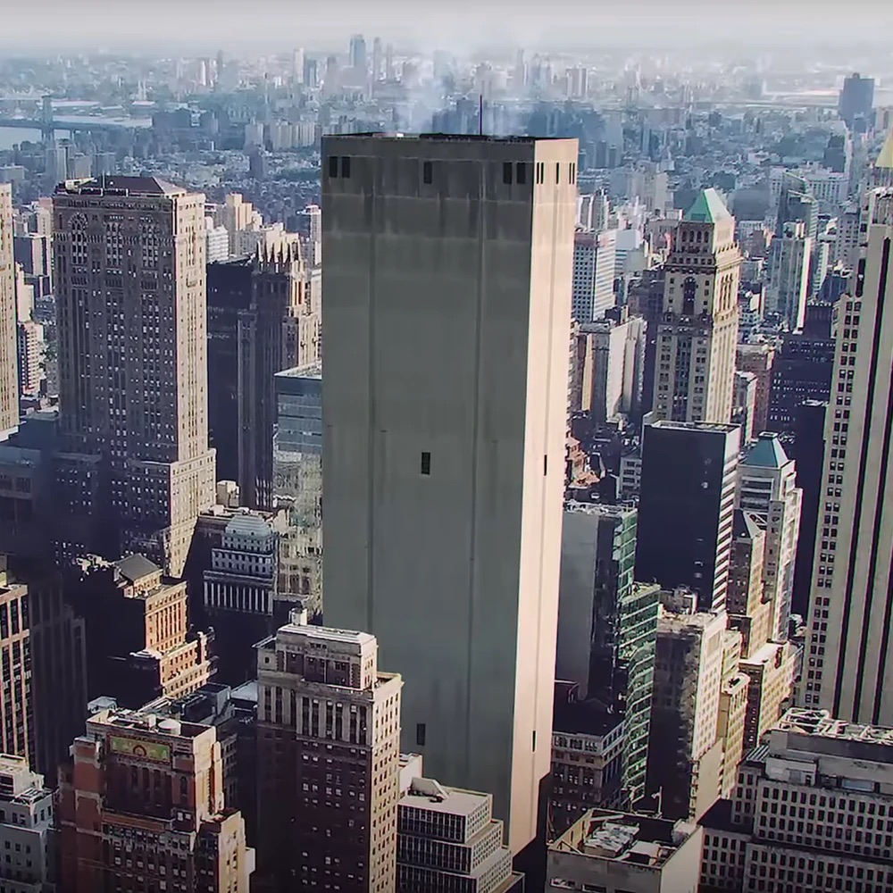

- History
- Structure & Nature
- Sectors
The Oldest House is a Place of Power based in New York, United States. Appearing as a featureless skyscraper of the Brutalist architectural style, the interior of the Oldest House is a space-defying, constantly shifting labyrinth connected to various alternate dimensions through spontaneously occurring Thresholds. The Board and the Astral Plane both appear to possess intrinsic connections to the Oldest House. The Oldest House acts as the global headquarters of the Federal Bureau of Control, where the Bureau carries out research on paranatural phenomena, and contains hundreds of Altered Items and Objects of Power.
